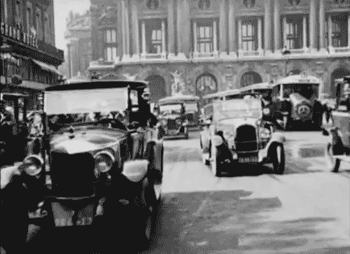
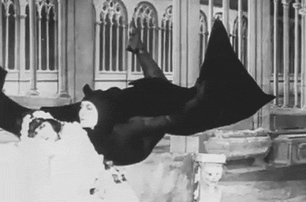
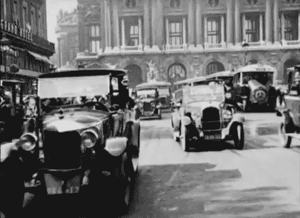
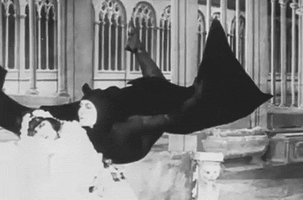

- 1880s -
Early Motion Picture Devices
In the late 19th century, a transformative chapter in the history of visual storytelling unfolded with inventors like Thomas Edison and the Lumière brothers pioneering early motion picture devices. Thomas Edison's Kinetoscope, invented in 1891, was a groundbreaking device that allowed individuals to view short films through a peephole, providing a glimpse into the potential of moving images. Concurrently, the Lumière brothers introduced the Cinématographe in 1895, a motion picture camera and projector that played a pivotal role in public film screenings. These inventions marked the inception of moving image technology, setting the stage for the cinematic revolution that would unfold in the decades to come.
- 1890s -
Introduction of Film Cameras
The late 19th and early 20th centuries witnessed a paradigm shift with the introduction and widespread availability of film cameras, shaping the trajectory of visual storytelling. During this period, filmmakers began harnessing celluloid film, a revolutionary invention by George Eastman in 1889. This flexible and transparent medium allowed for the sequential capture of images, laying the foundation for the emergence of silent films. As film cameras became more accessible, filmmakers experimented with innovative storytelling techniques, leading to the golden age of silent cinema. This era not only saw the birth of a new art form but also laid the groundwork for the narrative language of filmmaking that continues to evolve to this day.
- 1920s -
Sound in Film
The late 1920s marked a seismic shift in the film industry with the introduction of synchronized sound, heralding the transition from silent films to the era of "talkies." A watershed moment came with the release of "The Jazz Singer" in 1927, directed by Alan Crosland, widely regarded as the first feature-length motion picture with synchronized dialogue. This technological advancement, facilitated by the Vitaphone system, revolutionized filmmaking, enabling directors to incorporate dialogue, music, and sound effects into their narratives. The incorporation of sound not only enhanced the cinematic experience but also opened new avenues for storytelling, fundamentally altering the landscape of filmmaking and audience engagement.
- 1930s -
Color Film
The 1930s marked a significant evolution in cinematography with the widespread adoption of color film technology. Innovations like Technicolor, introduced in 1916 and gaining prominence in the 1930s, enabled filmmakers to capture and reproduce a broader spectrum of colors on screen. This era witnessed a gradual but profound shift from the black-and-white aesthetic to the vivid and visually immersive world of color cinematography. The introduction of Kodachrome in 1935 by Eastman Kodak further contributed to the popularity of color filmmaking, ushering in a new era of creativity and visual expression in the art of cinema.
- 1950s -
Television Era
The mid-20th century ushered in the television era, bringing about transformative advancements in video recording technology. The introduction of videotape in 1956, notably the Quadruplex videotape developed by Ampex, marked a turning point in television production. Videotape allowed for the recording and playback of television broadcasts, facilitating easier editing and rebroadcasting of content. This technological leap not only revolutionized the television industry but also had a profound impact on filmmaking, providing new tools and methodologies for content creation.
- 1960s -
Portable Video Cameras
The 1960s and 1970s witnessed a democratization of videography with the invention of portable video cameras. The iconic Sony Portapak, introduced in 1965, became a symbol of this transformative moment. Filmmakers and journalists now had the unprecedented ability to capture events outside traditional studio settings, leading to a surge in documentary filmmaking and the birth of video journalism. This portability and accessibility marked a paradigm shift, empowering creators to explore new narratives and perspectives, fundamentally altering the landscape of visual storytelling.
- 1970s -
Introduction of VHS
The 1970s heralded a new era in home videography with the widespread adoption of the VHS (Video Home System) format. Introduced by JVC in 1976, VHS revolutionized the way people engaged with video content. This format allowed consumers to record, share, and watch videos at home, contributing to the growth of the home video market. Video rental stores, a cultural phenomenon of the time, further democratized access to videography, providing audiences with a diverse array of films and content for home viewing. The VHS era marked a significant cultural shift, turning living rooms into personal theaters and making video content more accessible to a global audience.
- 1980s -
Digital Video
The late 20th century witnessed a revolutionary transition from analog to digital technology, fundamentally transforming videography. Digital video cameras emerged in the 1980s, capturing footage in digital formats and offering a quantum leap in image quality and flexibility. This transition facilitated a paradigm shift in the filmmaking process, providing filmmakers with new tools to capture and manipulate visual content in ways that were previously unimaginable. The convergence of digital video technology and desktop computing in the 1990s further democratized the creation of video content, allowing a broader range of individuals to participate in the cinematic storytelling process.
- 1990s -
Non-Linear Editing
The 1990s saw a revolution in video editing with the widespread adoption of non-linear editing systems. Avid Technology's Media Composer, introduced in 1989, and Adobe Premiere, launched in 1991, were at the forefront of this transformation. Non-linear editing allowed filmmakers to digitally manipulate and rearrange video sequences, providing a more flexible and creative approach to the editing process. This departure from traditional linear editing methods streamlined workflows, enhanced efficiency, and opened new possibilities for storytelling, contributing to the evolution of visual narratives.
- 2000s -
High Definition (HD) and 4K Video
The early 21st century brought about a significant leap in video resolution with the widespread adoption of High Definition (HD) and, subsequently, 4K video technology. The 2000s witnessed a profound improvement in image quality, offering viewers a more immersive and visually stunning experience. Both professional and consumer-grade cameras embraced higher resolutions, becoming the new standard in videography. This technological advancement not only enhanced the cinematic experience but also influenced the production standards across various visual mediums.
- PRESENT -
Digital Cinema and Streaming
The 2010s marked a transformative phase in videography with the rise of digital cinema cameras and the prevalence of online streaming platforms. Digital cinema cameras, exemplified by the RED series and ARRI Alexa, empowered filmmakers to capture high-quality digital footage for cinematic releases. Simultaneously, online streaming platforms like Netflix, Hulu, and Amazon Prime Video transformed the distribution and consumption of video content. Filmmakers and content creators gained unprecedented ease in producing and distributing high-quality video content, challenging traditional distribution models and reshaping audience viewing habits.
The past decade has witnessed a remarkable surge in immersive technologies, notably virtual reality (VR) and 360° video. VR technologies, such as Oculus Rift and HTC Vive, transport users to virtual environments, revolutionizing the way narratives are crafted and experienced. In tandem, 360° video allows viewers to interact with content
 


